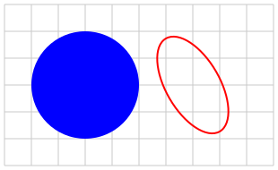
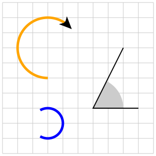
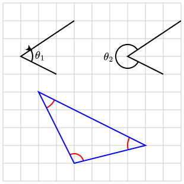
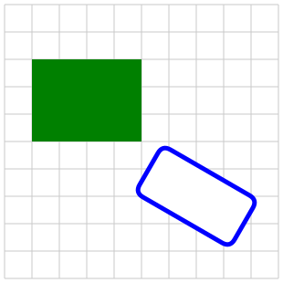

Section 3.6 Circles, ellipses, and rectangles
This section demonstrates some PreFigure elements that generate circles, rectangles, and associated shapes.
Subsection 3.6.1 Circles
Circles and ellipses are fairly simple. In addition to specifying the center and dimensions, there are only stroke and fill attributes. In contrast to polygons, these shapes are always closed.

<diagram dimensions="(300,180)" margins="5">
<coordinates bbox="(-5,0,5,6)">
<grid/>
<circle center="(-2,3)" radius="2" fill="blue" thickness="5"/>
<ellipse center="(2,3)" axes="(1,2)" stroke="red"
rotate="pi/6" degrees="no"/>
</coordinates>
</diagram>
If an ellipse has the attribute
@axes="(a,b)", then the ellipse is a translate of
\begin{equation*}
\frac{x^2}{a^2} + \frac{y^2}{b^2}=1\text{.}
\end{equation*}
Notice that ellipse may be rotated with the
@rotate attribute.Subsection 3.6.2 Arcs
An
<arc> represents a section of a circle and has stroke and fill attributes. There are a number of different ways to specify the arc, however, as seen in Figure 3.6.3.
<diagram dimensions="(300,300)" margins="5">
<coordinates bbox="(-5,-5,5,5)">
<grid/>
<arc center="(-2,2)" radius="2" range="(270,45)" arrows="1"
stroke="orange" thickness="5" reverse="yes"/>
<definition>points=((4,-2),(1,-2),(3,2))</definition>
<arc points="points" radius="2"
sector="yes" fill="lightgray"/>
<polygon points="points" stroke="black"/>
<arc center="(-2,-3)" radius="1" range="(-2*pi/3, 2*pi/3)"
degrees="no" stroke="blue" thickness="5"/>
</coordinates>
</diagram>
To define an arc, we need a center, a radius, and an angular extent. Every arc needs a
@radius attribute. There are two ways to specify the center and angular extent:- Use the
@centerand@rangeattributes. The@degrees="no"means that the value of@rangeis expressed in radians. - If a list of three points are given in the
@pointsattribute, then the center of the circle is the second point in the list and the angular extent is defined by vectors from the center to the other two points.
Other attributes include
- arrows
- The possible values are
@arrows="0", "1", "2"depending on whether the arc has no arrows, one arrow at the end of the angular extent, or two arrows on both ends. - reverse
- Setting
@reverse="yes"changes the direction of the arc, but is only relevant when adding arrows. - sector
- If
@sector="yes", then the sector is filled with the value of@fill.
Subsection 3.6.3 Angle markers
Angle markers are used to indicate angles between two line segments, such as two sides of a triangle.

<diagram dimensions="(300,300)" margins="5">
<coordinates bbox="(-5,-5,5,5)">
<grid/>
<definition>points=((-2,1),(-4,2),(-1,4))</definition>
<angle-marker points="points" radius="20" arrow="yes">
<m>\theta_1</m>
</angle-marker>
<polygon points="points" stroke="black"/>
<definition>points=((5,4),(2,2),(4,1))</definition>
<angle-marker points="points" radius="20">
<m>\theta_2</m>
</angle-marker>
<polygon points="points" stroke="black"/>
<definition>points=((3,-3),(-1,-4),(-3,0))</definition>
<angle-marker points="points" stroke="red"/>
<angle-marker points="roll(points)" stroke="red"/>
<angle-marker points="roll(roll(points))" stroke="red"/>
<polygon points="points" stroke="blue" closed="yes"/>
</coordinates>
</diagram>
An Angle marker is defined by a list of three points that define two line segments meeting at the center of the angle marker. The angle is defined in the counter-clockwise direction between the two sides.
- points
- The value of
@pointsmust be a list of three points. - radius
- The
@radiusattribute defines the radius of the circular arc in SVG units. This is an optional attribute as PreFigure will determine a radius if one is not given. Smaller angles will have a larger radius. - arrow
- An arrow can be added by declaring
@arrow="yes". - reverse
- Setting
@reverse="yes"changes the direction of the angle marker when attaching an arrow. - label
- Notice that a label can be attached to an angle marker by enclosing the text within the
<angle-marker>element. The positioning of the label will be determined by PreFigure, but@alignmentand@offsetattributes given to the<angle-marker>element will take precedence.
Notice the use of the
roll operator which rolls the elements in a list: roll((a,b,c)) = (b,c,a).Subsection 3.6.4 Rectangles
A rectangle is defined by specifying either its center or its lower-left corner as well as its dimensions. The corners can be rounded by setting the
@corner-radius attribute to the desired radius in SVG units, and the rectangle can be rotated about its center using the @rotate attribute.
<diagram dimensions="(300,300)" margins="5">
<coordinates bbox="(-5,-5,5,5)">
<grid/>
<rectangle lower-left="(-4,0)" dimensions="(4,3)"
fill="green"/>
<rectangle center="(2,-2)" dimensions="(2,4)" rotate="60"
stroke="blue" thickness="5" fill="white"
corner-radius="10"/>
</coordinates>
</diagram>